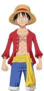
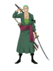
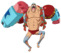
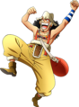
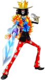
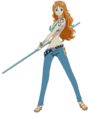

| Auteur | Type de Manga | Genre | Thèmes | Date | Nombre de volumes |
|---|---|---|---|---|---|
Eichiro Oda |
Shonen | Nekketsu, aventure, comédie, drame, fantasy, humour, satire | Piraterie, amitié, liberté | 22 juillet 1997 – en cours | 101 |
L'histoire de One Piece se déroule dans un monde fictif dominé par les océans,
où certains pirates aspirent à une ère de liberté et d'aventure connue comme « l'âge d'or de la piraterie ».
Cette époque fut inaugurée à la suite des derniers mots prononcés par le roi des pirates, Gol D. Roger, surnommé Gold Roger avant son exécution.
Roger annonce au monde que ses habitants étaient libres de chercher toutes les richesses qu'il avait accumulées durant sa vie entière, le « One Piece».
Plusieur années plutard après la mort de Gold Roger malgrès que l'éspoir de trouver le One piece est pratiquement disparut, un jeune garçon nommé Monkey D.Luffy qui rève de devenir le roi des pirates depuis son plus jeune âge, décide de partir à l'aventure et de réunir son équipage avec lequel il s'entêtera malgrès tout les obstacles qui se présente sur sa route à trouver le One Piece et réaliser son rève.
| Capitaine | Second | Cuisto | Mécanicien | Tireur d'élite | Medecin | Musicien | Navigatrice | Archéologue |
|---|---|---|---|---|---|---|---|---|
|  Luffy |
 Zoro |
 Sanji |
 Franki |
 Usopp |
Chopper |
 Brook |
 Nami |
 Robin |